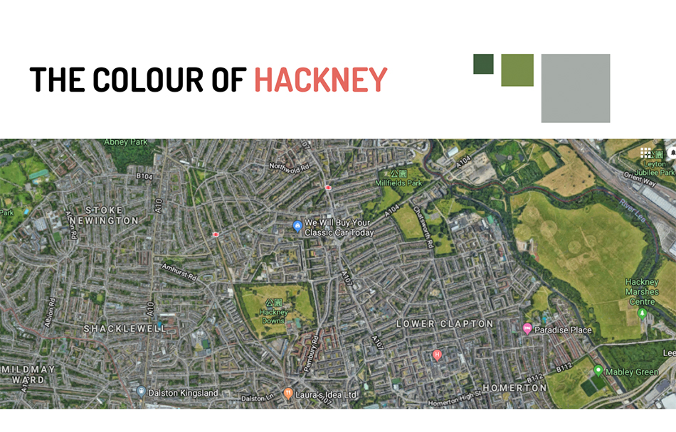
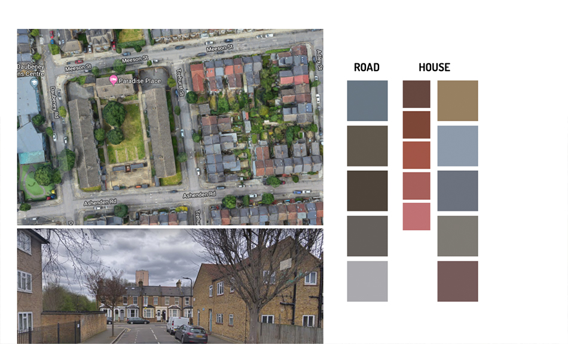
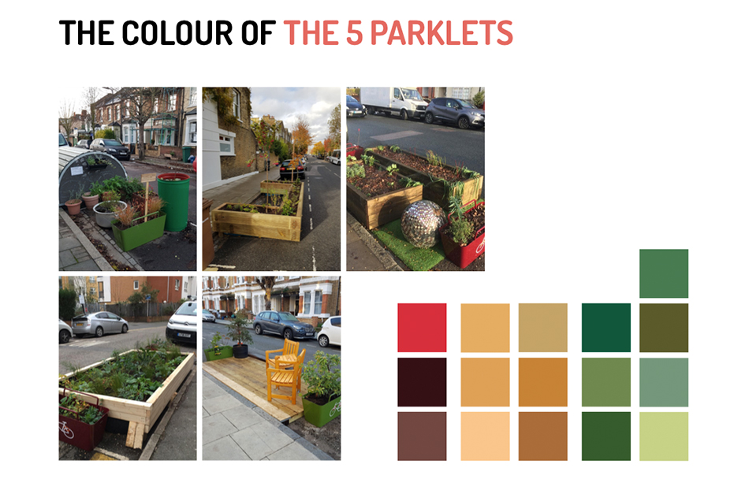
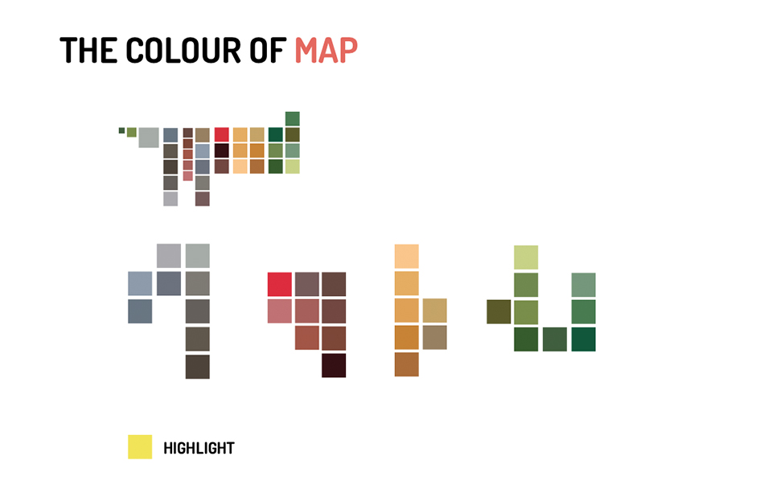

Hackney Community Parklets
Cycle Route Map Design
- Social Design
- Graphic Design
Challenge:
How can design be used to encourage people to change behaviours? This project is aimed to encourage more people cycle rather than drive cars. Supported by the Hackney Council, local people can transform an existing parklet to a community facility that brings creativity or vitality into urban life. After taking part of this project, I got the photos of the community parklets built by local people. I want to use design to encourage people to the future of the place.
Concept
The project is to encourage people to cycle, which is to do something nice for the future from the perspectives of environmental health, urban landscape, physical and mental health. It claims to a behavioural change from the collaboration through recreating the current place. However, when it comes to change the behaviours, many constraints show up based on considering the reality, the distance of two destinations, the safety, the convenience and so on.
So, in this concept, I try to reclaim the imagination back. Since it is something that can motivate people. If behaviours are framed by the reality, rather than using the exactly photos of the innovated parklets, I illustrated the engagements that people doing activities in the innovated community parklets to provide a way to rethink the existing places.
Colour Cohesion
While designing the map, I considered this map as a combination of the history and future. It should be felt like the place when people hold it in the hand when walking in the area. Thus, I organised the colours from the environments in Hackney, such as the nature, the buildings, the roads etc and added with the bright yellow as the highlight which also represent the community parklets that brings a different imagination of the future in Hackney.
   